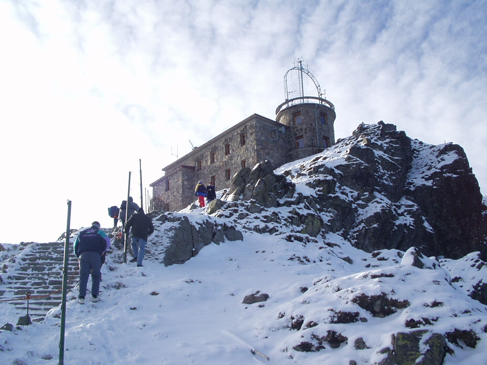
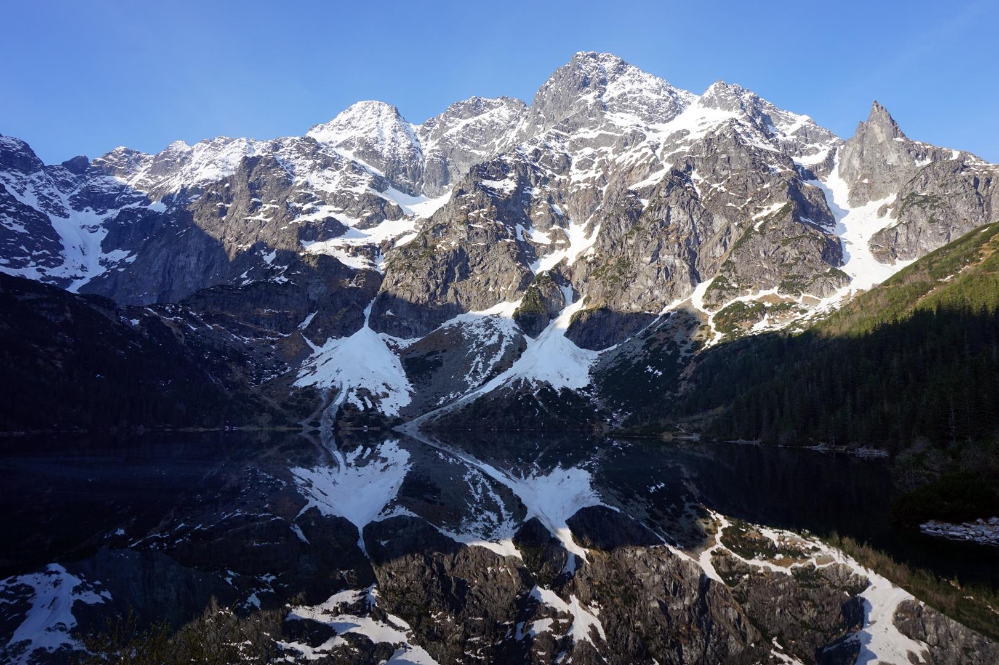
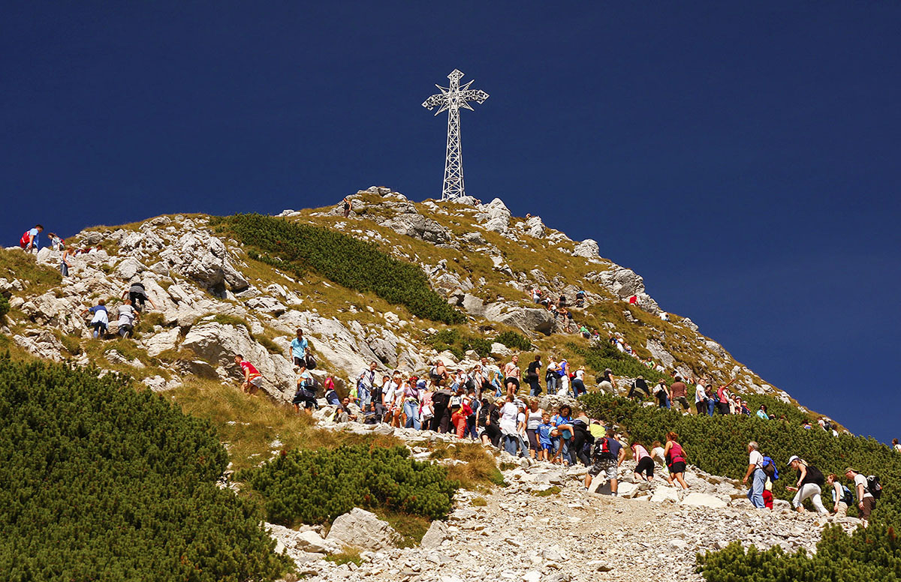
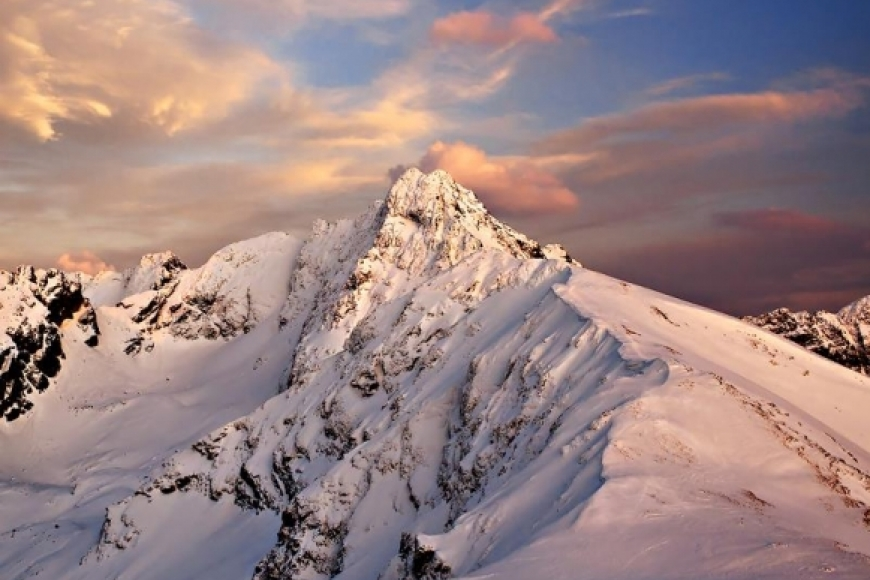

Kasprowy Wierch
Kasprowy Wierch (słow. Kasprov vrch; dawniej Kasprowa Czuba, Stawiańska Czuba, Goryczkowiańska Czuba) – szczyt w Tatrach Zachodnich o wysokości 1987 m.
Nazwa Kasprowy Wierch pochodzi od leżącej u podnóży szczytu Hali Kasprowej, a ta z kolei według podań ludowych od imienia lub przezwiska jej właściciela – górala Kaspra[1]. Zbudowany jest ze skał krystalicznych (granodioryty i pegmatyty), mimo położenia w młodszej części Tatr zbudowanej ze skał osadowych. Należy bowiem do tzw. wyspy krystalicznej Goryczkowej. Strome stoki (niemal ściany) opadają tylko do Doliny Kasprowej. Znajduje się w nich kilka żlebów, z których najbardziej znany jest Żleb pod Palcem. Z wszystkich pozostałych stron szczyt Kasprowego Wierchu dostępny jest bez problemu. Tuż poniżej wydłużonego wierzchołka Kasprowego Wierchu, na wysokości 1959 m n.p.m. stoi budynek, w którym znajduje się bar, restauracja, kiosk, poczekalnia dla czekających na zjazd kolejką, przechowalnia nart, WC oraz zimowa stacja TOPR. Od budynku do Suchej Przełęczy prowadzi brukowany kamieniem spacerowy chodnik o długości ok. 200 m. W rejonie szczytu botanicy znaleźli stanowiska kilka bardzo rzadkich roślin, które w Polsce występują tylko w Tatrach i to w niewielu tylko miejscach: mietlica alpejska, przymiotno węgierskie, sit trójłuskowy i wiechlina tatrzańska.
Do góry!Rysy
Rysy (słow. Rysy, niem. Meeraugspitze, węg. Tengerszem-csúcs) – góra położona na granicy polsko-słowackiej, w Tatrach Wysokich (jednej z części Tatr). Ma trzy wierzchołki, z których najwyższy jest środkowy (2503 m n.p.m.), znajdujący się w całości na terytorium Słowacji. Wierzchołek północny, przez który biegnie granica, stanowi najwyżej położony punkt Polski (2499 m n.p.m.) i należy do Korony Europy.
Masyw Rysów posiada trzy wierzchołki. Najwyższy z nich (tzw. środkowy – 2503 m n.p.m.) leży po stronie słowackiej, podobnie jak najniższy wierzchołek południowo-wschodni (2473 m). Na granicy polsko-słowackiej znajduje się średni co do wysokości, północno-zachodni wierzchołek o wysokości 2499 m n.p.m., który jest najwyżej położonym punktem Polski. Rysy cechują się dużą wysokością względną, wznosząc się ponad 1100 metrów nad powierzchnię Morskiego Oka.
Do góry!Giewont
Giewont – masyw górski w Tatrach Zachodnich o wysokości 1894 m n.p.m. i długości 2,7 km. Jego główny wierzchołek, Wielki Giewont, jest często uznawany za najwyższy szczyt w Tatrach Zachodnich położony w całości na terenie Polski; wyższa jest jednak Twarda Kopa w pobliżu Czerwonych Wierchów, często przeoczana z uwagi na to, że ma bardzo niewielką minimalną deniwelację względną.
Masyw Giewontu położony jest między Doliną Bystrej, Doliną Kondratową, Doliną Małej Łąki i Doliną Strążyską. Góruje nad Zakopanem i jest z niego znakomicie widoczny. Od strony północnej Giewont jest stromy i trudno dostępny, zbocza południowe są łagodniejsze. Szczyt znajduje się w północnej grani Kopy Kondrackiej. Złożony jest z trzech części: Wielkiego Giewontu (1894 m), Małego Giewontu (1728 m) i Długiego Giewontu (1867 m)[1]. Pomiędzy Wielkim i Małym Giewontem znajduje się Giewoncka Przełęcz (1680 m), z której opada cieszący się złą sławą (ponieważ zginęło w nim wielu turystów, którzy zboczyli ze szlaku celem skrócenia sobie drogi z Giewontu) Żleb Kirkora. Do roku 2003 zginęło w ten sposób ponad 20 turystów[3]. Wielki Giewont ma północną ścianę o wysokości względnej około 600 m. W kierunku południowym zbocza Wielkiego Giewontu opadają do Kondrackiej Przełęczy. Długi Giewont ma ok. 1,3 km długości.
Do góry!Świnica
Świnica (słow. Svinica) – zwornikowy szczyt w grani głównej Tatr Wysokich o dwóch wierzchołkach, różniących się wysokością o 10 m. Mająca kształt szerokiej piramidy skalnej Świnica jest pierwszym od zachodu wybitnym szczytem (o wybitności ponad 100 m) Tatr Wysokich i kapitalnym punktem widokowym.
Dwa wierzchołki Świnicy rozdziela przełęcz – Świnicka Szczerbina Niżnia (2278 m), opada spod niej Żleb Blatona. Wyższy wierzchołek ma 2301 m i prowadzi na niego szlak turystyczny. Niższy, zwany wierzchołkiem taternickim, ma wysokość 2291 m i jest niedostępny turystycznie. Niektórzy za trzeci wierzchołek uznają też niewybitny garb Świnickiej Kopy. Punktem zwornikowym, przez który przebiega granica państwowa pomiędzy Polską a Słowacją, jest jej główny wierzchołek. Świnica leży w miejscu załamania się głównego grzbietu Tatr pod kątem prostym i odejścia bocznej, 9-kilometrowej długości wschodniej grani Świnicy zakończonej Wołoszynem. Odcinkiem tej grani od Zawratu poprowadzono szlak Orlej Perci.
Do góry!| Szczyt | Kasprowy Wierch | Rysy | Giewont | Świnica |
|---|---|---|---|---|
| Wysokość [n.p.m.] | 1987 m | 2499 m | 1894 m | 2301 m |